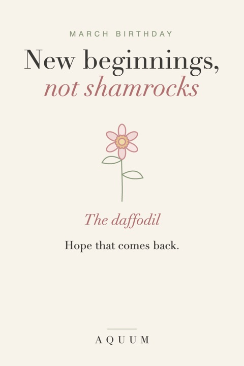

March Birthday Gift Ideas: New Beginnings, Not Shamrocks
2026-10-01
Written by the team behind Aquum, a small birth flower gift shop. How we make money.

March birthdays land at the edge of spring, next to St. Patrick's Day and its sea of green. Shamrocks are fun for a party, but they say "March," not "you."
The fix is a gift that's clearly about them, and the easiest way to get there is their month's flower.
Start with March's birth flower
March's birth flower is the daffodil, and it stands for new beginnings and hope that comes back. It's often the first flower of the year, which makes it perfect for someone starting something new. March's second flower, the jonquil, a smaller and very fragrant daffodil, means affection and desire.
Read the full March birth flower guide.
March birthday gift ideas
- A daffodil shirt, mug or tote for a gift that outlasts the spring.
- A note about their year ahead: the daffodil is a birthday flower made for fresh starts.
- A spring plan: a walk somewhere the daffodils bloom, written into the card.
- A framed daffodil print for a new home or a new office.
Before you give it
Bulbs and plants: all parts of the daffodil are toxic if eaten, to people and to pets. For a home with curious dogs or cats, a daffodil design is the safer gift.
Order early
Made-to-order gifts take about a week to be made and shipped in the US, so order at least a week before the birthday.
More months: birthday gift ideas for every month.